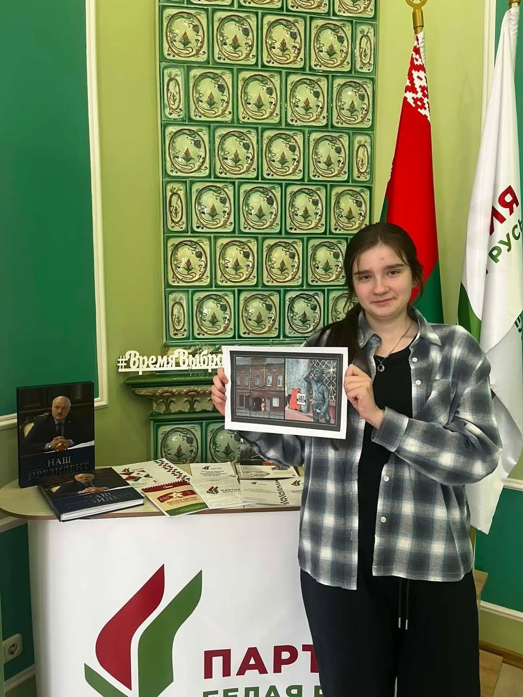
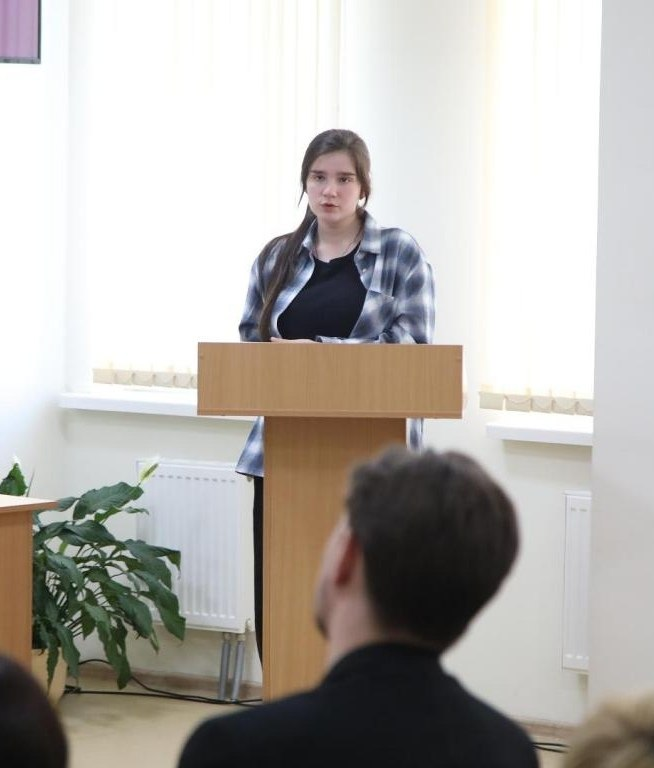

Откройте для себя Бобруйск
Город с богатой историей, уникальной архитектурой и промышленным наследием. На этом сайте вы найдёте главные туристические достопримечательности, которые расскажут историю Бобруйска от деревянного зодчества до промышленных памятников.
Исследовать достопримечательностиО проекте «Бобер-путеводитель»
«Бобёр-путеводитель» — это молодёжный туристический проект, направленный на популяризацию исторического и культурного наследия города Бобруйска. Он знакомит жителей и гостей города с его уникальной архитектурой, музеями, достопримечательностями и другими знаковыми местами.
Автор идеи — Дарья Колячко, студентка Бобруйского государственного аграрно-экономического колледжа. В феврале 2026 года Дарья представила свой проект на смотре-конкурсе инициатив «Молодёжный взгляд — битва идей», организаторами которого выступили Бобруйский городской исполнительный комитет, городской Совет депутатов и Молодёжный совет.
Инициативу заметили и поддержали в Ленинском районном отделении г. Бобруйска Белорусской партии «Белая Русь». Было принято решение профинансировать и реализовать эту интересную задумку.
Проект решает сразу несколько важных задач:
1) развитие городской среды;
2) повышение туристической привлекательности Бобруйска;
3) вовлечение молодёжи в реальные позитивные дела.
К сбору материалов для проекта подключились члены молодёжного движения «Искры» (Ленинское районное отделение г. Бобруйска партии «Белая Русь»). Активисты работали с информацией, предоставленной УК «Бобруйский краеведческий музей», а также использовали данные из открытых интернет-источников.
Финансирование проекта осуществляется за счёт средств Ленинского районного отделения г. Бобруйска Белорусской партии «Белая Русь».


Туристические достопримечательности Бобруйска
Список ключевых объектов культурного и исторического наследия, рекомендованных для посещения.
Уникальный экскурсовод
Прогулка по историческому центру Бобруйска, раскрывающая город как живой музей под открытым небом. От величественных святынь до уютных двориков и промышленных памятников. Вы окунетесь в историю и неповторимый колорит нашего города.